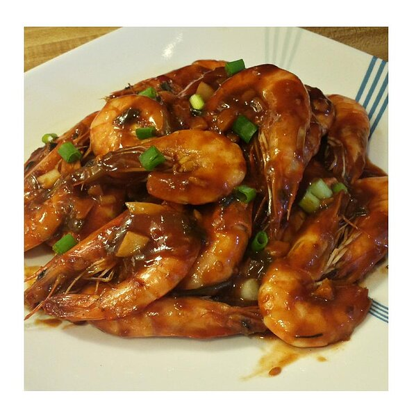

Szechwan Shrimp

Description
Szechwan shrimp is a dish of stir-fried shrimp in chilli sauce (which may use doubanjiang) in Chinese cuisine. It is a part of Sichuan and Shanghai cuisines.
Ingredients
- 4 tablespoons water
- 2 tablespoons ketchup
- 1 tablespoon soy sauce
- 2 teaspoons cornstarch
- 1 teaspoon honey
- ½ teaspoon crushed red pepper
- ¼ teaspoon ground ginger
- 1 tablespoon vegetable oil
- 4 cloves garlic, minced
- 12 ounces cooked shrimp, tails removed
Steps
- In a bowl, stir together water, ketchup, soy sauce, cornstarch, honey, crushed red pepper, and ground ginger. Set aside.
- Heat oil in a large skillet over medium-high heat. Stir in green onions and garlic; cook 30 seconds
- Stir in shrimp, and toss to coat with oil. Stir in sauce
- Cook and stir until sauce is bubbly and thickened.